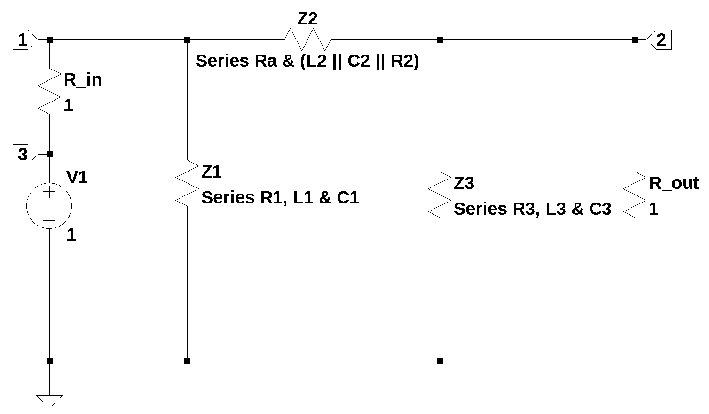

from sympy import *
import numpy as np
from tabulate import tabulate
import pandas as pd
from scipy import signal
import matplotlib.pyplot as plt
import SymMNA
from IPython.display import display, Markdown, Math, Latex
init_printing()30 Pi-filter
Last update: 12 Feb 2024

30.1 Introduction
Question posted on Electronics Stackexchange by user15174 (2023) asked:
Am trying to apply the FACTS method to find out the transfer function for this circuit as shown below. This is a Pi-filter circuit with all its component parasitics and also including the source and load resistances. I would like to find out the transfer function of this circuit and match its plot from Mathcad with simulation.
30.2 Circuit description
30.3 Circuit analysis
- find the transfer function
The net list for the filter is:
V1 8 0 1
R1 1 8 1
R2 1 4 1
R3 3 1 1
R4 2 3 1
R5 2 6 1
R6 2 0 1
L1 4 5 1 Rser=0
L2 3 2 1 Rser=0
L3 6 7 2 Rser=0
C1 5 0 1
C2 2 3 2
C3 7 0 1The following Python modules are used.
30.4 FACTs
Write the impedances for each of the legs on the pi network
Franc’s answer walks through the FACTS method
Introduction to Fast Analytical Techniques: Application to Small-Signal Modeling
–>
Three components in series
Z1 = R2 + L1 + C1
Z2 = R3 + (L2 || C2 || R4)
Z3 = R5 + L3 + C3symbols](https://docs.sympy.org/latest/tutorials/intro-tutorial/gotchas.html#symbols)
symbols takes a string of variable names separated by spaces or commas, and creates Symbols out of them.
L1, L2, L3, R1, R2, R3, R4, R5, R6, C1, C2, C3, s = symbols('L1, L2, L3, R1, R2, R3, R4, R5, R6, C1, C2, C3, s')Z1_sym = R2+s*L1+1/(s*C1)solve(Z1_sym,s)\(\displaystyle \left[ \frac{- C_{1} R_{2} - \sqrt{C_{1} \left(C_{1} R_{2}^{2} - 4 L_{1}\right)}}{2 C_{1} L_{1}}, \ \frac{- C_{1} R_{2} + \sqrt{C_{1} \left(C_{1} R_{2}^{2} - 4 L_{1}\right)}}{2 C_{1} L_{1}}\right]\)
Z1 = Z1_sym.subs({R2:1,C1:1,L1:1})
Z1\(\displaystyle s + 1 + \frac{1}{s}\)
solve(Z1,s)\(\displaystyle \left[ - \frac{1}{2} - \frac{\sqrt{3} i}{2}, \ - \frac{1}{2} + \frac{\sqrt{3} i}{2}\right]\)
N(solve(Z1,s)[0])/(2*np.pi)\(\displaystyle -0.0795774715459477 - 0.137832223855448 i\)
N(solve(Z1,s)[1])/(2*np.pi)\(\displaystyle -0.0795774715459477 + 0.137832223855448 i\)
Z2_sym = R3 + (s*L2*(1/(s*C2))*R4)/(1/(s*C2)+s*L2+R4) # products over sums of (L2 || C2 || R4) plus R3, Z2_sym\(\displaystyle R_{3} + \frac{L_{2} R_{4}}{C_{2} \left(L_{2} s + R_{4} + \frac{1}{C_{2} s}\right)}\)
solve(Z2_sym,s)\(\displaystyle \left[ \frac{- R_{4} \left(C_{2} R_{3} + L_{2}\right) - \sqrt{C_{2}^{2} R_{3}^{2} R_{4}^{2} - 4 C_{2} L_{2} R_{3}^{2} + 2 C_{2} L_{2} R_{3} R_{4}^{2} + L_{2}^{2} R_{4}^{2}}}{2 C_{2} L_{2} R_{3}}, \ \frac{- R_{4} \left(C_{2} R_{3} + L_{2}\right) + \sqrt{C_{2}^{2} R_{3}^{2} R_{4}^{2} - 4 C_{2} L_{2} R_{3}^{2} + 2 C_{2} L_{2} R_{3} R_{4}^{2} + L_{2}^{2} R_{4}^{2}}}{2 C_{2} L_{2} R_{3}}\right]\)
Z2_sym.free_symbols\(\displaystyle \left\{C_{2}, L_{2}, R_{3}, R_{4}, s\right\}\)
Z2 = Z2_sym.subs({R3:1,R4:1,C2:2,L2:1})
Z2\(\displaystyle 1 + \frac{1}{2 \left(s + 1 + \frac{1}{2 s}\right)}\)
solve(Z2,s)\(\displaystyle \left[ -1, \ - \frac{1}{2}\right]\)
N(solve(Z2,s)[0])/(2*np.pi)\(\displaystyle -0.159154943091895\)
N(solve(Z2,s)[1])/(2*np.pi)\(\displaystyle -0.0795774715459477\)
Z3_sym = R5+s*L3+1/(s*C3)Z3_sym.free_symbols\(\displaystyle \left\{C_{3}, L_{3}, R_{5}, s\right\}\)
solve(Z3_sym,s)\(\displaystyle \left[ \frac{- C_{3} R_{5} - \sqrt{C_{3} \left(C_{3} R_{5}^{2} - 4 L_{3}\right)}}{2 C_{3} L_{3}}, \ \frac{- C_{3} R_{5} + \sqrt{C_{3} \left(C_{3} R_{5}^{2} - 4 L_{3}\right)}}{2 C_{3} L_{3}}\right]\)
Z3 = Z3_sym.subs({R5:1,C3:1,L3:2})
Z3\(\displaystyle 2 s + 1 + \frac{1}{s}\)
solve(Z3,s)\(\displaystyle \left[ - \frac{1}{4} - \frac{\sqrt{7} i}{4}, \ - \frac{1}{4} + \frac{\sqrt{7} i}{4}\right]\)
N(solve(Z3,s)[0])/(2*np.pi)\(\displaystyle -0.0397887357729738 - 0.105271099836948 i\)
N(solve(Z3,s)[1])/(2*np.pi)\(\displaystyle -0.0397887357729738 + 0.105271099836948 i\)

30.4.1 Transfer function at node 2
Pi section is Z1, Z2 and Z3. R6 is the load impedance and R1 is the source impedance.
we have (R6 || with Z3)
[Z2 + (R6 || with Z3)]
V1 3 0 1
R1 1 3 1
R6 2 0 1
R_Z1 1 0 1
R_Z2 2 1 1
R_Z3 2 0 1H_facts = R6*Z3/(R6*Z2 + R6*Z3 + Z2*Z3)H_facts\(\displaystyle \frac{R_{6} \cdot \left(2 s + 1 + \frac{1}{s}\right)}{R_{6} \cdot \left(1 + \frac{1}{2 \left(s + 1 + \frac{1}{2 s}\right)}\right) + R_{6} \cdot \left(2 s + 1 + \frac{1}{s}\right) + \left(1 + \frac{1}{2 \left(s + 1 + \frac{1}{2 s}\right)}\right) \left(2 s + 1 + \frac{1}{s}\right)}\)
H_facts.simplify()\(\displaystyle \frac{R_{6} \cdot \left(2 s \left(s + 1\right) + 1\right) \left(s \left(2 s + 1\right) + 1\right)}{R_{6} s \left(2 s \left(s + 1\right) + s + 1\right) + R_{6} \cdot \left(2 s \left(s + 1\right) + 1\right) \left(s \left(2 s + 1\right) + 1\right) + \left(s \left(2 s + 1\right) + 1\right) \left(2 s \left(s + 1\right) + s + 1\right)}\)
cancel(H_facts,s)\(\displaystyle \frac{4 R_{6} s^{4} + 6 R_{6} s^{3} + 6 R_{6} s^{2} + 3 R_{6} s + R_{6}}{R_{6} + s^{4} \cdot \left(4 R_{6} + 4\right) + s^{3} \cdot \left(8 R_{6} + 8\right) + s^{2} \cdot \left(9 R_{6} + 7\right) + s \left(4 R_{6} + 4\right) + 1}\)
Not the same as H_sys obtained below.
cancel(H_facts,s)\(\displaystyle \frac{4 R_{6} s^{4} + 6 R_{6} s^{3} + 6 R_{6} s^{2} + 3 R_{6} s + R_{6}}{R_{6} + s^{4} \cdot \left(4 R_{6} + 4\right) + s^{3} \cdot \left(8 R_{6} + 8\right) + s^{2} \cdot \left(9 R_{6} + 7\right) + s \left(4 R_{6} + 4\right) + 1}\)
Using NMA to get the FACTS network equations and solve
net_list = '''
V1 3 0 1
R1 1 3 1
R6 2 0 1
R_Z1 1 0 1
R_Z2 2 1 1
R_Z3 2 0 1
'''Generate the network equations.
report, network_df, df2, A, X, Z = SymMNA.smna(net_list)
# Put matricies into SymPy
X = Matrix(X)
Z = Matrix(Z)
NE_facts = Eq(A*X,Z)Generate markdown text to display the network equations.
temp = ''
for i in range(len(X)):
temp += '${:s}$<br>'.format(latex(Eq((A*X)[i:i+1][0],Z[i])))
Markdown(temp)\(v_{1} \cdot \left(\frac{1}{R_{z2}} + \frac{1}{R_{z1}} + \frac{1}{R_{1}}\right) - \frac{v_{2}}{R_{z2}} - \frac{v_{3}}{R_{1}} = 0\)
\(v_{2} \cdot \left(\frac{1}{R_{z3}} + \frac{1}{R_{z2}} + \frac{1}{R_{6}}\right) - \frac{v_{1}}{R_{z2}} = 0\)
\(I_{V1} - \frac{v_{1}}{R_{1}} + \frac{v_{3}}{R_{1}} = 0\)
\(v_{3} = V_{1}\)
# turn the free symbols into SymPy variables
var(str(NE_facts.free_symbols).replace('{','').replace('}',''))\(\displaystyle \left( R_{1}, \ R_{z3}, \ v_{1}, \ I_{V1}, \ V_{1}, \ v_{2}, \ R_{z1}, \ R_{6}, \ R_{z2}, \ v_{3}\right)\)
Built a dictionary of element values.
element_values = SymMNA.get_part_values(network_df)
element_values\(\displaystyle \left\{ R_{1} : 1.0, \ R_{6} : 1.0, \ R_{z1} : 1.0, \ R_{z2} : 1.0, \ R_{z3} : 1.0, \ V_{1} : 1.0\right\}\)
Generate the symbolic solution, which takes a couple of minutes on my laptop’s Intel i3-8130U CPU @ 2.20GHz.
U_facts = solve(NE_facts,X)The solution to the network equations in symbolic form are long, so the code to display them is commented out.
temp = ''
for i in U_facts.keys():
temp += '${:s} = {:s}$<br>'.format(latex(i),latex(U_facts[i]))
Markdown(temp)\(v_{1} = \frac{R_{6} R_{z1} R_{z2} V_{1} + R_{6} R_{z1} R_{z3} V_{1} + R_{z1} R_{z2} R_{z3} V_{1}}{R_{1} R_{6} R_{z1} + R_{1} R_{6} R_{z2} + R_{1} R_{6} R_{z3} + R_{1} R_{z1} R_{z3} + R_{1} R_{z2} R_{z3} + R_{6} R_{z1} R_{z2} + R_{6} R_{z1} R_{z3} + R_{z1} R_{z2} R_{z3}}\)
\(v_{2} = \frac{R_{6} R_{z1} R_{z3} V_{1}}{R_{1} R_{6} R_{z1} + R_{1} R_{6} R_{z2} + R_{1} R_{6} R_{z3} + R_{1} R_{z1} R_{z3} + R_{1} R_{z2} R_{z3} + R_{6} R_{z1} R_{z2} + R_{6} R_{z1} R_{z3} + R_{z1} R_{z2} R_{z3}}\)
\(v_{3} = V_{1}\)
\(I_{V1} = \frac{- R_{6} R_{z1} V_{1} - R_{6} R_{z2} V_{1} - R_{6} R_{z3} V_{1} - R_{z1} R_{z3} V_{1} - R_{z2} R_{z3} V_{1}}{R_{1} R_{6} R_{z1} + R_{1} R_{6} R_{z2} + R_{1} R_{6} R_{z3} + R_{1} R_{z1} R_{z3} + R_{1} R_{z2} R_{z3} + R_{6} R_{z1} R_{z2} + R_{6} R_{z1} R_{z3} + R_{z1} R_{z2} R_{z3}}\)
H_facts = (U_facts[v2]/U_facts[v1]).simplify()
H_facts\(\displaystyle \frac{R_{6} R_{z3}}{R_{6} R_{z2} + R_{6} R_{z3} + R_{z2} R_{z3}}\)
str(H_facts)'R6*R_z3/(R6*R_z2 + R6*R_z3 + R_z2*R_z3)'30.5 Symbolic MNA procedure
t = symbols(‘t’,positive=True) # t > 0
30.5.1 Load the netlist
The netlist generated by LTSpice is pasted into the cell below and some edits were made to remove the inductor series resistance and the independent sources are set to their DC values.
net_list = '''
V1 8 0 1
R1 1 8 1
R2 1 4 1
R3 3 1 1
R4 2 3 1
R5 2 6 1
R6 2 0 1
L1 4 5 1
L2 3 2 1
L3 6 7 2
C1 5 0 1
C2 2 3 2
C3 7 0 1
'''Generate the network equations.
report, network_df, df2, A, X, Z = SymMNA.smna(net_list)
# Put matricies into SymPy
X = Matrix(X)
Z = Matrix(Z)
NE_sym = Eq(A*X,Z)Generate markdown text to display the network equations.
temp = ''
for i in range(len(X)):
temp += '${:s}$<br>'.format(latex(Eq((A*X)[i:i+1][0],Z[i])))
Markdown(temp)\(v_{1} \cdot \left(\frac{1}{R_{3}} + \frac{1}{R_{2}} + \frac{1}{R_{1}}\right) - \frac{v_{3}}{R_{3}} - \frac{v_{4}}{R_{2}} - \frac{v_{8}}{R_{1}} = 0\)
\(- I_{L2} + v_{2} \left(C_{2} s + \frac{1}{R_{6}} + \frac{1}{R_{5}} + \frac{1}{R_{4}}\right) + v_{3} \left(- C_{2} s - \frac{1}{R_{4}}\right) - \frac{v_{6}}{R_{5}} = 0\)
\(I_{L2} + v_{2} \left(- C_{2} s - \frac{1}{R_{4}}\right) + v_{3} \left(C_{2} s + \frac{1}{R_{4}} + \frac{1}{R_{3}}\right) - \frac{v_{1}}{R_{3}} = 0\)
\(I_{L1} - \frac{v_{1}}{R_{2}} + \frac{v_{4}}{R_{2}} = 0\)
\(C_{1} s v_{5} - I_{L1} = 0\)
\(I_{L3} - \frac{v_{2}}{R_{5}} + \frac{v_{6}}{R_{5}} = 0\)
\(C_{3} s v_{7} - I_{L3} = 0\)
\(I_{V1} - \frac{v_{1}}{R_{1}} + \frac{v_{8}}{R_{1}} = 0\)
\(v_{8} = V_{1}\)
\(- I_{L1} L_{1} s + v_{4} - v_{5} = 0\)
\(- I_{L2} L_{2} s - v_{2} + v_{3} = 0\)
\(- I_{L3} L_{3} s + v_{6} - v_{7} = 0\)
As shown above MNA generated many equations and these would be difficult to solve by hand and a symbolic soultion would take a lot of computing time. The equations are displace in matrix notation.
NE_sym\(\displaystyle \left[\begin{matrix}v_{1} \cdot \left(\frac{1}{R_{3}} + \frac{1}{R_{2}} + \frac{1}{R_{1}}\right) - \frac{v_{3}}{R_{3}} - \frac{v_{4}}{R_{2}} - \frac{v_{8}}{R_{1}}\\- I_{L2} + v_{2} \left(C_{2} s + \frac{1}{R_{6}} + \frac{1}{R_{5}} + \frac{1}{R_{4}}\right) + v_{3} \left(- C_{2} s - \frac{1}{R_{4}}\right) - \frac{v_{6}}{R_{5}}\\I_{L2} + v_{2} \left(- C_{2} s - \frac{1}{R_{4}}\right) + v_{3} \left(C_{2} s + \frac{1}{R_{4}} + \frac{1}{R_{3}}\right) - \frac{v_{1}}{R_{3}}\\I_{L1} - \frac{v_{1}}{R_{2}} + \frac{v_{4}}{R_{2}}\\C_{1} s v_{5} - I_{L1}\\I_{L3} - \frac{v_{2}}{R_{5}} + \frac{v_{6}}{R_{5}}\\C_{3} s v_{7} - I_{L3}\\I_{V1} - \frac{v_{1}}{R_{1}} + \frac{v_{8}}{R_{1}}\\v_{8}\\- I_{L1} L_{1} s + v_{4} - v_{5}\\- I_{L2} L_{2} s - v_{2} + v_{3}\\- I_{L3} L_{3} s + v_{6} - v_{7}\end{matrix}\right] = \left[\begin{matrix}0\\0\\0\\0\\0\\0\\0\\0\\V_{1}\\0\\0\\0\end{matrix}\right]\)
The symbols generated by the Python code are extraced by the SymPy function free_symbols and then declared as SymPy variables.
# turn the free symbols into SymPy variables
var(str(NE_sym.free_symbols).replace('{','').replace('}',''))\(\displaystyle \left( R_{1}, \ R_{4}, \ v_{4}, \ v_{7}, \ R_{2}, \ I_{L3}, \ v_{1}, \ I_{V1}, \ v_{2}, \ C_{2}, \ C_{3}, \ R_{6}, \ I_{L1}, \ L_{2}, \ s, \ R_{3}, \ R_{5}, \ C_{1}, \ v_{8}, \ V_{1}, \ L_{3}, \ L_{1}, \ I_{L2}, \ v_{6}, \ v_{3}, \ v_{5}\right)\)
Built a dictionary of element values.
element_values = SymMNA.get_part_values(network_df)
element_values\(\displaystyle \left\{ C_{1} : 1.0, \ C_{2} : 2.0, \ C_{3} : 1.0, \ L_{1} : 1.0, \ L_{2} : 1.0, \ L_{3} : 2.0, \ R_{1} : 1.0, \ R_{2} : 1.0, \ R_{3} : 1.0, \ R_{4} : 1.0, \ R_{5} : 1.0, \ R_{6} : 1.0, \ V_{1} : 1.0\right\}\)
Generate the symbolic solution, which takes a couple of minutes on my laptop’s Intel i3-8130U CPU @ 2.20GHz.
U_sym = solve(NE_sym,X)The solution to the network equations in symbolic form are long, so the code to display them is commented out.
#temp = ''
#for i in U_sym.keys():
# temp += '${:s} = {:s}$<br>'.format(latex(i),latex(U_sym[i]))
#Markdown(temp)H_sym = (U_sym[v2]/U_sym[v1]).simplify()
H_sym\(\displaystyle \frac{R_{6} \left(C_{2} C_{3} L_{2} L_{3} R_{4} s^{4} + C_{2} C_{3} L_{2} R_{4} R_{5} s^{3} + C_{2} L_{2} R_{4} s^{2} + C_{3} L_{2} L_{3} s^{3} + C_{3} L_{2} R_{5} s^{2} + C_{3} L_{3} R_{4} s^{2} + C_{3} R_{4} R_{5} s + L_{2} s + R_{4}\right)}{C_{2} C_{3} L_{2} L_{3} R_{3} R_{4} s^{4} + C_{2} C_{3} L_{2} L_{3} R_{4} R_{6} s^{4} + C_{2} C_{3} L_{2} R_{3} R_{4} R_{5} s^{3} + C_{2} C_{3} L_{2} R_{3} R_{4} R_{6} s^{3} + C_{2} C_{3} L_{2} R_{4} R_{5} R_{6} s^{3} + C_{2} L_{2} R_{3} R_{4} s^{2} + C_{2} L_{2} R_{4} R_{6} s^{2} + C_{3} L_{2} L_{3} R_{3} s^{3} + C_{3} L_{2} L_{3} R_{4} s^{3} + C_{3} L_{2} L_{3} R_{6} s^{3} + C_{3} L_{2} R_{3} R_{5} s^{2} + C_{3} L_{2} R_{3} R_{6} s^{2} + C_{3} L_{2} R_{4} R_{5} s^{2} + C_{3} L_{2} R_{4} R_{6} s^{2} + C_{3} L_{2} R_{5} R_{6} s^{2} + C_{3} L_{3} R_{3} R_{4} s^{2} + C_{3} L_{3} R_{4} R_{6} s^{2} + C_{3} R_{3} R_{4} R_{5} s + C_{3} R_{3} R_{4} R_{6} s + C_{3} R_{4} R_{5} R_{6} s + L_{2} R_{3} s + L_{2} R_{4} s + L_{2} R_{6} s + R_{3} R_{4} + R_{4} R_{6}}\)
Can the symbolic expression be simplified, because this is whaythe FACT method is supposed to do, reveal aspects of the circuit operation that get hidden by the algebra.
H_num, H_denom = fraction(H_sym)H_num\(\displaystyle R_{6} \left(C_{2} C_{3} L_{2} L_{3} R_{4} s^{4} + C_{2} C_{3} L_{2} R_{4} R_{5} s^{3} + C_{2} L_{2} R_{4} s^{2} + C_{3} L_{2} L_{3} s^{3} + C_{3} L_{2} R_{5} s^{2} + C_{3} L_{3} R_{4} s^{2} + C_{3} R_{4} R_{5} s + L_{2} s + R_{4}\right)\)
H_denom\(\displaystyle C_{2} C_{3} L_{2} L_{3} R_{3} R_{4} s^{4} + C_{2} C_{3} L_{2} L_{3} R_{4} R_{6} s^{4} + C_{2} C_{3} L_{2} R_{3} R_{4} R_{5} s^{3} + C_{2} C_{3} L_{2} R_{3} R_{4} R_{6} s^{3} + C_{2} C_{3} L_{2} R_{4} R_{5} R_{6} s^{3} + C_{2} L_{2} R_{3} R_{4} s^{2} + C_{2} L_{2} R_{4} R_{6} s^{2} + C_{3} L_{2} L_{3} R_{3} s^{3} + C_{3} L_{2} L_{3} R_{4} s^{3} + C_{3} L_{2} L_{3} R_{6} s^{3} + C_{3} L_{2} R_{3} R_{5} s^{2} + C_{3} L_{2} R_{3} R_{6} s^{2} + C_{3} L_{2} R_{4} R_{5} s^{2} + C_{3} L_{2} R_{4} R_{6} s^{2} + C_{3} L_{2} R_{5} R_{6} s^{2} + C_{3} L_{3} R_{3} R_{4} s^{2} + C_{3} L_{3} R_{4} R_{6} s^{2} + C_{3} R_{3} R_{4} R_{5} s + C_{3} R_{3} R_{4} R_{6} s + C_{3} R_{4} R_{5} R_{6} s + L_{2} R_{3} s + L_{2} R_{4} s + L_{2} R_{6} s + R_{3} R_{4} + R_{4} R_{6}\)
expand
expand() is one of the most common simplification functions in SymPy. Although it has a lot of scopes, for now, we will consider its function in expanding polynomial expressions. For example:
Given a polynomial, expand() will put it into a canonical form of a sum of monomials.
expand() may not sound like a simplification function. After all, by its very name, it makes expressions bigger, not smaller. Usually this is the case, but often an expression will become smaller upon calling expand() on it due to cancellation.
cancel
cancel() will take any rational function and put it into the standard canonical form, , where and are expanded polynomials with no common factors, and the leading coefficients of and do not have denominators (i.e., are integers).
Note that since factor() will completely factorize both the numerator and the denominator of an expression, it can also be used to do the same thing:
The voltage on node N is symplified with the chain of operators applied to the expression; nsimplify(), simplify(), expand() and together(). This helps SymPy solve the inverse Laplace transform.
n, d = fraction(H_sym)
display('numerator', n.expand(), 'denominator', cancel(d,s))'numerator'\(\displaystyle C_{2} C_{3} L_{2} L_{3} R_{4} R_{6} s^{4} + C_{2} C_{3} L_{2} R_{4} R_{5} R_{6} s^{3} + C_{2} L_{2} R_{4} R_{6} s^{2} + C_{3} L_{2} L_{3} R_{6} s^{3} + C_{3} L_{2} R_{5} R_{6} s^{2} + C_{3} L_{3} R_{4} R_{6} s^{2} + C_{3} R_{4} R_{5} R_{6} s + L_{2} R_{6} s + R_{4} R_{6}\)
'denominator'\(\displaystyle R_{3} R_{4} + R_{4} R_{6} + s^{4} \left(C_{2} C_{3} L_{2} L_{3} R_{3} R_{4} + C_{2} C_{3} L_{2} L_{3} R_{4} R_{6}\right) + s^{3} \left(C_{2} C_{3} L_{2} R_{3} R_{4} R_{5} + C_{2} C_{3} L_{2} R_{3} R_{4} R_{6} + C_{2} C_{3} L_{2} R_{4} R_{5} R_{6} + C_{3} L_{2} L_{3} R_{3} + C_{3} L_{2} L_{3} R_{4} + C_{3} L_{2} L_{3} R_{6}\right) + s^{2} \left(C_{2} L_{2} R_{3} R_{4} + C_{2} L_{2} R_{4} R_{6} + C_{3} L_{2} R_{3} R_{5} + C_{3} L_{2} R_{3} R_{6} + C_{3} L_{2} R_{4} R_{5} + C_{3} L_{2} R_{4} R_{6} + C_{3} L_{2} R_{5} R_{6} + C_{3} L_{3} R_{3} R_{4} + C_{3} L_{3} R_{4} R_{6}\right) + s \left(C_{3} R_{3} R_{4} R_{5} + C_{3} R_{3} R_{4} R_{6} + C_{3} R_{4} R_{5} R_{6} + L_{2} R_{3} + L_{2} R_{4} + L_{2} R_{6}\right)\)
d.factor()\(\displaystyle C_{2} C_{3} L_{2} L_{3} R_{3} R_{4} s^{4} + C_{2} C_{3} L_{2} L_{3} R_{4} R_{6} s^{4} + C_{2} C_{3} L_{2} R_{3} R_{4} R_{5} s^{3} + C_{2} C_{3} L_{2} R_{3} R_{4} R_{6} s^{3} + C_{2} C_{3} L_{2} R_{4} R_{5} R_{6} s^{3} + C_{2} L_{2} R_{3} R_{4} s^{2} + C_{2} L_{2} R_{4} R_{6} s^{2} + C_{3} L_{2} L_{3} R_{3} s^{3} + C_{3} L_{2} L_{3} R_{4} s^{3} + C_{3} L_{2} L_{3} R_{6} s^{3} + C_{3} L_{2} R_{3} R_{5} s^{2} + C_{3} L_{2} R_{3} R_{6} s^{2} + C_{3} L_{2} R_{4} R_{5} s^{2} + C_{3} L_{2} R_{4} R_{6} s^{2} + C_{3} L_{2} R_{5} R_{6} s^{2} + C_{3} L_{3} R_{3} R_{4} s^{2} + C_{3} L_{3} R_{4} R_{6} s^{2} + C_{3} R_{3} R_{4} R_{5} s + C_{3} R_{3} R_{4} R_{6} s + C_{3} R_{4} R_{5} R_{6} s + L_{2} R_{3} s + L_{2} R_{4} s + L_{2} R_{6} s + R_{3} R_{4} + R_{4} R_{6}\)
solve(n,s)\(\displaystyle \left[ \frac{- C_{3} R_{5} - \sqrt{C_{3}^{2} R_{5}^{2} - 4 C_{3} L_{3}}}{2 C_{3} L_{3}}, \ \frac{- C_{3} R_{5} + \sqrt{C_{3}^{2} R_{5}^{2} - 4 C_{3} L_{3}}}{2 C_{3} L_{3}}, \ \frac{- L_{2} - \sqrt{- 4 C_{2} L_{2} R_{4}^{2} + L_{2}^{2}}}{2 C_{2} L_{2} R_{4}}, \ \frac{- L_{2} + \sqrt{- 4 C_{2} L_{2} R_{4}^{2} + L_{2}^{2}}}{2 C_{2} L_{2} R_{4}}\right]\)
#solve(d,s)30.6 Numerical example
element_values\(\displaystyle \left\{ C_{1} : 1.0, \ C_{2} : 2.0, \ C_{3} : 1.0, \ L_{1} : 1.0, \ L_{2} : 1.0, \ L_{3} : 2.0, \ R_{1} : 1.0, \ R_{2} : 1.0, \ R_{3} : 1.0, \ R_{4} : 1.0, \ R_{5} : 1.0, \ R_{6} : 1.0, \ V_{1} : 1.0\right\}\)
30.6.1 Numerical solution
NE = NE_sym.subs(element_values)
NE\(\displaystyle \left[\begin{matrix}3.0 v_{1} - 1.0 v_{3} - 1.0 v_{4} - 1.0 v_{8}\\- I_{L2} + v_{2} \cdot \left(2.0 s + 3.0\right) + v_{3} \left(- 2.0 s - 1.0\right) - 1.0 v_{6}\\I_{L2} - 1.0 v_{1} + v_{2} \left(- 2.0 s - 1.0\right) + v_{3} \cdot \left(2.0 s + 2.0\right)\\I_{L1} - 1.0 v_{1} + 1.0 v_{4}\\- I_{L1} + 1.0 s v_{5}\\I_{L3} - 1.0 v_{2} + 1.0 v_{6}\\- I_{L3} + 1.0 s v_{7}\\I_{V1} - 1.0 v_{1} + 1.0 v_{8}\\v_{8}\\- 1.0 I_{L1} s + v_{4} - v_{5}\\- 1.0 I_{L2} s - v_{2} + v_{3}\\- 2.0 I_{L3} s + v_{6} - v_{7}\end{matrix}\right] = \left[\begin{matrix}0\\0\\0\\0\\0\\0\\0\\0\\1.0\\0\\0\\0\end{matrix}\right]\)
U = solve(NE,X)
temp = ''
for i in U.keys():
temp += '${:s} = {:s}$<br>'.format(latex(i),latex(U[i]))
Markdown(temp)\(v_{1} = \frac{8.0 s^{6} + 20.0 s^{5} + 33.0 s^{4} + 31.0 s^{3} + 21.0 s^{2} + 8.0 s + 2.0}{12.0 s^{6} + 38.0 s^{5} + 61.0 s^{4} + 59.0 s^{3} + 37.0 s^{2} + 14.0 s + 3.0}\)
\(v_{2} = \frac{4.0 s^{6} + 8.0 s^{5} + 13.0 s^{4} + 11.0 s^{3} + 8.0 s^{2} + 3.0 s + 1.0}{12.0 s^{6} + 38.0 s^{5} + 61.0 s^{4} + 59.0 s^{3} + 37.0 s^{2} + 14.0 s + 3.0}\)
\(v_{3} = \frac{4.0 s^{6} + 10.0 s^{5} + 17.0 s^{4} + 16.0 s^{3} + 11.0 s^{2} + 4.0 s + 1.0}{12.0 s^{6} + 38.0 s^{5} + 61.0 s^{4} + 59.0 s^{3} + 37.0 s^{2} + 14.0 s + 3.0}\)
\(v_{4} = \frac{8.0 s^{6} + 12.0 s^{5} + 21.0 s^{4} + 18.0 s^{3} + 15.0 s^{2} + 6.0 s + 2.0}{12.0 s^{6} + 38.0 s^{5} + 61.0 s^{4} + 59.0 s^{3} + 37.0 s^{2} + 14.0 s + 3.0}\)
\(v_{5} = \frac{8.0 s^{4} + 12.0 s^{3} + 13.0 s^{2} + 6.0 s + 2.0}{12.0 s^{6} + 38.0 s^{5} + 61.0 s^{4} + 59.0 s^{3} + 37.0 s^{2} + 14.0 s + 3.0}\)
\(v_{6} = \frac{4.0 s^{6} + 6.0 s^{5} + 10.0 s^{4} + 7.0 s^{3} + 6.0 s^{2} + 2.0 s + 1.0}{12.0 s^{6} + 38.0 s^{5} + 61.0 s^{4} + 59.0 s^{3} + 37.0 s^{2} + 14.0 s + 3.0}\)
\(v_{7} = \frac{2.0 s^{4} + 3.0 s^{3} + 4.0 s^{2} + 2.0 s + 1.0}{12.0 s^{6} + 38.0 s^{5} + 61.0 s^{4} + 59.0 s^{3} + 37.0 s^{2} + 14.0 s + 3.0}\)
\(v_{8} = 1.0\)
\(I_{V1} = \frac{- 4.0 s^{6} - 18.0 s^{5} - 28.0 s^{4} - 28.0 s^{3} - 16.0 s^{2} - 6.0 s - 1.0}{12.0 s^{6} + 38.0 s^{5} + 61.0 s^{4} + 59.0 s^{3} + 37.0 s^{2} + 14.0 s + 3.0}\)
\(I_{L1} = \frac{8.0 s^{5} + 12.0 s^{4} + 13.0 s^{3} + 6.0 s^{2} + 2.0 s}{12.0 s^{6} + 38.0 s^{5} + 61.0 s^{4} + 59.0 s^{3} + 37.0 s^{2} + 14.0 s + 3.0}\)
\(I_{L2} = \frac{2.0 s^{4} + 4.0 s^{3} + 5.0 s^{2} + 3.0 s + 1.0}{12.0 s^{6} + 38.0 s^{5} + 61.0 s^{4} + 59.0 s^{3} + 37.0 s^{2} + 14.0 s + 3.0}\)
\(I_{L3} = \frac{2.0 s^{5} + 3.0 s^{4} + 4.0 s^{3} + 2.0 s^{2} + s}{12.0 s^{6} + 38.0 s^{5} + 61.0 s^{4} + 59.0 s^{3} + 37.0 s^{2} + 14.0 s + 3.0}\)
H = (U[v2]/U[v1]).nsimplify().simplify().expand().together()
H\(\displaystyle \frac{4 s^{4} + 4 s^{3} + 5 s^{2} + 2 s + 1}{8 s^{4} + 12 s^{3} + 13 s^{2} + 6 s + 2}\)
30.6.1.1 Convert transfer function to SciPy system
In this section we convert the SymPy equations into Numpy format.
Extract the numerator and denominator polynomials so that the system can be defined in SciPy.
H_num, H_denom = fraction(H) #returns numerator and denominatorThe SciPy function, TransferFunction, represents the system as the continuous-time transfer function and takes as inputs the coeeficients of the numerator and denominator polynominals.
# convert symbolic to numpy polynomial
a = np.array(Poly(H_num, s).all_coeffs(), dtype=float)
b = np.array(Poly(H_denom, s).all_coeffs(), dtype=float)
sys = signal.TransferFunction(a,b)30.6.2 Poles and zeros of the low pass transfer function
The poles and zeros of the transfer function can easly be obtained with the following code:
sys_zeros = np.roots(sys.num)
sys_poles = np.roots(sys.den)30.6.2.1 Low pass filter pole zero plot
The poles and zeros of the preamp transfer function are plotted.
plt.plot(np.real(sys_zeros), np.imag(sys_zeros), 'ob', markerfacecolor='none')
plt.plot(np.real(sys_poles), np.imag(sys_poles), 'xr')
plt.legend(['Zeros', 'Poles'], loc=0)
plt.title('Pole / Zero Plot')
plt.xlabel('real part, \u03B1')
plt.ylabel('imaginary part, j\u03C9')
plt.ylim((-1,1))
plt.xlim((-0.5,0))
plt.grid()
plt.show()Poles and zeros of the transfer function plotted on the complex plane. The units are in radian frequency.
Printing these values in Hz.
print('number of zeros: {:d}'.format(len(sys_zeros)))
for i in sys_zeros:
print('{:,.3f} Hz'.format(i/(2*np.pi)))number of zeros: 4
-0.040+0.105j Hz
-0.040-0.105j Hz
-0.040+0.105j Hz
-0.040-0.105j Hzprint('number of poles: {:d}'.format(len(sys_poles)))
for i in sys_poles:
print('{:,.3f} Hz'.format(i/(2*np.pi)))number of poles: 4
-0.072+0.118j Hz
-0.072-0.118j Hz
-0.048+0.078j Hz
-0.048-0.078j Hz30.6.3 Bode plot
Use the SciPy function bode to plot the magnitude and phase of the filter. In electrical engineering, a Bode plot is a graph of the frequency response of a system. It is usually a combination of the magnitude (usually in decibels) of the frequency response and the phase shift. As originally conceived by Hendrik Wade Bode in the 1930s, the plot is an asymptotic approximation of the frequency response, using straight line segments. Bode plots are used to assess the stability of systems by finding the gain and phase margins.
x = np.logspace(-3, 1, 1000, endpoint=False)*2*np.pi
w, mag, phase = signal.bode(sys, w=x) # returns: rad/s, mag in dB, phase in deg
fig, ax1 = plt.subplots()
ax1.set_ylabel('magnitude, dB')
ax1.set_xlabel('frequency, Hz')
plt.semilogx(w/(2*np.pi), mag,'-b') # Bode magnitude plot
ax1.tick_params(axis='y')
#ax1.set_ylim((-30,20))
plt.grid()
# instantiate a second y-axes that shares the same x-axis
ax2 = ax1.twinx()
color = 'tab:blue'
plt.semilogx(w/(2*np.pi), phase,':',color='tab:red') # Bode phase plot
ax2.set_ylabel('phase, deg',color=color)
ax2.tick_params(axis='y', labelcolor=color)
#ax2.set_ylim((-5,25))
plt.title('Magnitude and phase response')
plt.show()